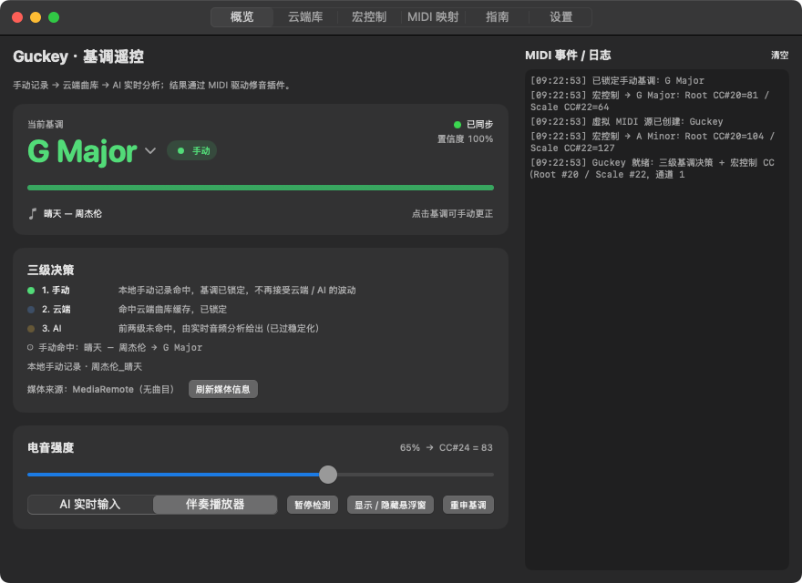
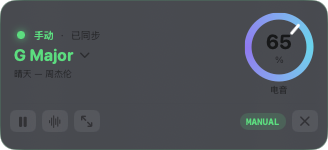

Guckey 检测当前播放歌曲的基调，编码成三条 MIDI CC，推给 Studio One 的宏控制器旋钮， 再由宏旋钮写进插件里的 Key / Scale。 它是独立 App —— 不加载 VST3 / AU / AAX，不实例化 AVAudioUnit， 完全不参与音频渲染链路。


Decision Engine
同一个歌名可能同时被手动记录、云端曲库和实时分析命中。Guckey 用固定优先级裁决， 并且一旦锁定，就不再让后面的结果改写它 —— 这是「CC 不再乱跳」的关键。
本地 SQLite 里的 manual_keys。命中即强制锁定，无视云端与 AI，只发一次锁定的值。
云端曲库同步下来的 cloud_keys。先精准匹配，失败再走 Levenshtein 模糊匹配（容差随长度放宽）。
音频进自研 DSP（YIN + FFT 色度 + Krumhansl 剖面），但必须通过稳定化模块才允许输出。
Stabilizer
调性估计本身不做防抖，抖动全部交给稳定化模块处理。以下参数都能在 App 里调。
| 参数 | 默认 | 作用 |
|---|---|---|
| 置信度下限 | 0.70 | Krumhansl 相关系数低于此值的单帧直接丢弃 |
| 滑动窗口 | 10 s | 窗口内某一调占比 > 60% 才允许输出 |
| 首次锁定最少样本 | 6 | 防止 2–3 帧就抢锁导致占比虚高 |
| 迟滞保持时长 | 3 s | 新调性连续保持这么久才允许切换 |
| 迟滞置信度优势 | 0.15 | 需高出 locked + 0.15 × (1 − locked)，按剩余余量折算以保证可达 |
| 启动静默 | 6 s | 切歌后这段时间内不发任何 CC |
| 分析频段 | 60–500 Hz | 频域带通，聚焦和弦与贝斯 |
默认把 Root 的 12 档等分到插件低 / 高档之间，取区间正中；档位能逐音级覆盖，也能用「扫动 CC#20」让宿主自己学一遍。
内置 Auto-Tune Pro、Auto-Tune Advanced、Auto-Tune (2026)、Waves Tune Realtime、Topline Vocal Tune 的调式表；不在列表里的插件选「自定义」，填一下调式总数即可。
云端曲库每次同步整体覆盖本地缓存，并顺带清理已删除的行。查询只读本地 SQLite，播放中不发任何网络请求。
无边框常驻面板，顶边锚定、悬停展开，位置会记住。⌥⌘K 随时叫出来看一眼当前基调，或者顺手改掉。
Download
同一份安装包同时支持 Apple Silicon 与 Intel 两种芯片。macOS 13.0 或更新。
基调检测 + 三级决策 + 三条 MIDI CC 输出，控制台与悬浮窗共用一个状态源。
系统设置 → 隐私与安全性点「仍要打开」，之后就能正常双击启动。
FAQ
Contact
崩溃日志、截图、需求、吐槽都可以直接发。加微信时备注一下「Guckey」，通过得更快。